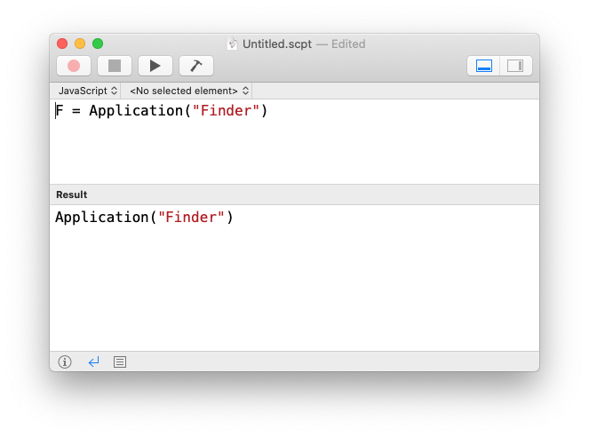
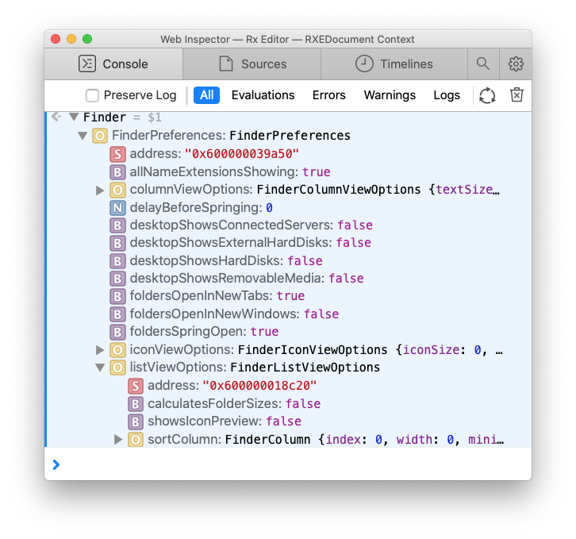
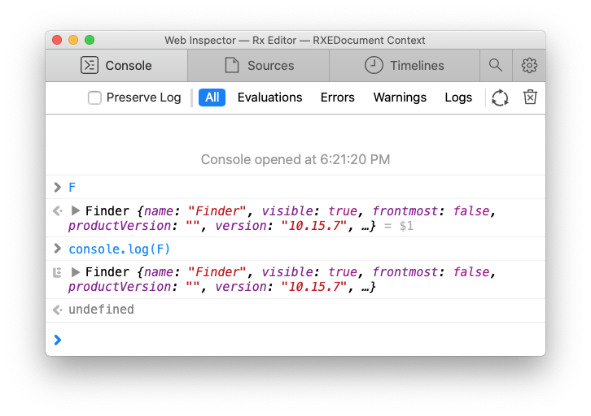
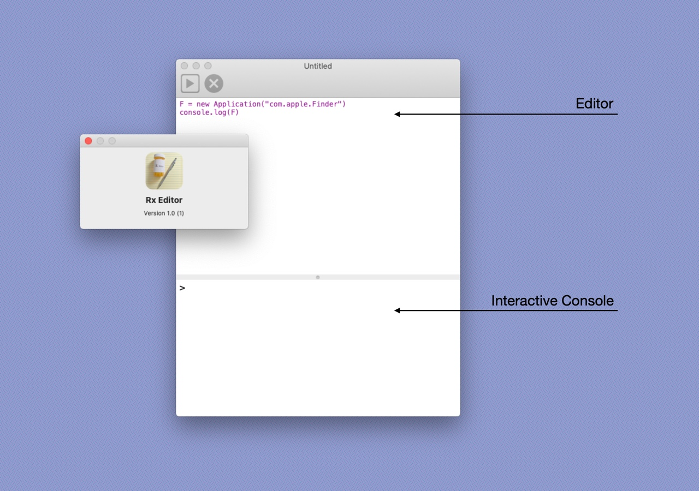

Better Scripting
The state of scriptable software is disappointing.1
AppleScript in particular drives me crazy. Its not interactive like many other scripting languages. It is overly verbose (and that’s coming from someone that loves ObjC). Worst of all, it isn’t discoverable.
Apple attempted to fix AppleScript by providing JavaScript bindings. Unfortunately, the JS bindings don’t make scripting much better. The JS bindings suffer from all the afflictions of AppleScript, but with a vaguely JS feel.
I'm going to ignore that the AppleScript dialect exists and will just focus on the JavaScript dialect. Specifically, why I find scripting to be a poor user experience.
Basic frustration
Typically when scripting you start small and build functionality invoking some code and then inspecting the results. Then taking some part of the result, invoking some code, and then again inspecting the results. You repeat this until arriving at some state or result that completes a task.
Let's apply this process to exploring and hopefully discovering scripting basics. Don't follow along by typing and running these yourself. There's nothing to be gained by doing so. This is meant to be a rhetorical illustration of the poor user experience, nothing more.
Assume we begin armed with just enough knowledge to create a script in
Script Editor and to get a scriptable reference to the Finder (the
macOS file manager). Running the script produces undefined
Great, did it succeed? Is undefined and error? If you're familiar
with JavaScript you may quickly realize that undefined is the result
of evaluating a variable assignment. If we want to inspect F, we
need to evaluate it. The easy way to do that is to drop the var.
We're scripting, we don't need no stinking scoped variables!

Well, that doesn't help. There's nothing to inspect. There's no additional information.
So let's try some good ol' fashion printf debugging. Adding
console.log(F) give us
An ERROR! What about console.dir()? You'll find that it doesn't
exist. In fact the only method console has is log() and it doesn't
really help with introspection.
We're developers, so why not build our own introspection? Let's try to get a list of properties and methods defined on the object.
An empty array! This is getting old. Let's agree that there's no obvious way to discover what can be done with the scriptable object.2
Web Inspector chicanery
Eventually, either by experimentation, or by stumbling upon it in the
documentation, you'll throw a debugger statement in Script Editor
and make your way to Safari's Debug menu
Now the Safari Web Inspector looks promising. It allows us to
"inspect" the JavaScript objects. You can start by evaluating this
in the console to see what is defined in the global scope. Obviously,
the thing to try now is evaluating our scriptable reference to Finder,
F.
More disappointment. This just gave us the generic JavaScript value
for .toString(). We didn't get an interactive tree of the properties
like we did by evaluating this.
Scroll up to find our previous this or type it again and manually
look for the F subtree. Expanding the F subtree, we can finally
learn what we can do with our scriptable object.
If we further expand F's Object Prototype subtree we can discover
even more functionality.
You may notice a stop sign with an exclamation will appear as you explore the object tree. Click the stop sign (1) and you'll jump to a bunch of errors. Click "All" (2) to restore the default Console filter.
As you explore object trees, evaluate expressions, and otherwise use
the Web Inspector these errors will bombard your session. As should be
clear by now, scripting is a terrible user experience. Things don't
evaluate to themselves, you have to use .properties() and .get().
The Inspector is an afterthought and cumbersome, not to mention it is
component of a completely separate app.
A better scripting environment
It is possible to create a better scripting environment. Step one: create an AppleScript dialect that is easy to explore and interact with. Step two: build a DrRacket-style3 app with an editor on top and interactive console on the bottom. Bonus: build a debugger directly into the editor/console and ensure that the Web Inspector is available too and works as nicely as it does for the web.
I started a project to do just that. The project is called Rx Editor. The AppleScript dialect, Rx4, is around 50% to 80% complete. The app is around 1% complete, debugger 0% complete, Web Inspector integration is free and tracks the development of Rx (so it is 50-80% complete as well).
If you evaluate F = new Application("com.apple.Finder") in the Web
Inspector while inspecting a Rx context you'll get the expected object
tree.

You can explore the object graph without seeing numerous errors. The
Objects are typed and structured logically. Subtrees in the graph are
properly expanded with no need for .get() or .properties().

Evaluating an object does exactly what you'd expect. Using
console.log() does what you'd expect.

And this is what the Rx Editor application looks like (at least for now).

It is far from complete, but I'm making it public now. Check out Rx Editor on GitHub.
Footnotes
My perspective is almost entirely based on recent macOS versions and first-party applications. However, as far as I can tell Windows and Linux (including the open source world at large) isn't any better.
If you're a seasoned AppleScripter and you want to scream at me, remember we're assuming we don't know anything beyond getting the initial reference to the scriptable object.
Racket didn't invent this style of editor, but it is possibly the most familiar incarnation to the most people.
I'm not 100% sold on calling the dialect Rx, but the editor is Rx Editor.
Last modified: 2022-03-07 13:10:31 -0800 -0800